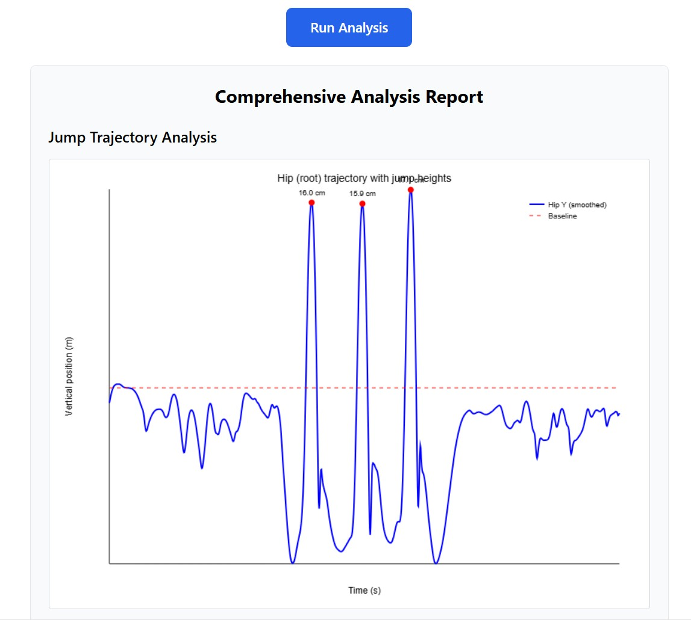

Perception Neuron Motion Capture
Posiadam bezpośredni kontakt z firmą Noitom. Oferujemy pośrednictwo w zakupie najbardziej przystępnych cenowo systemów MoCap na rynku. Sprawdź naszą ofertę.

Posiadam bezpośredni kontakt z firmą Noitom. Oferujemy pośrednictwo w zakupie najbardziej przystępnych cenowo systemów MoCap na rynku. Sprawdź naszą ofertę.
Najmniejszy i najbardziej wstrząsoodporny system inercyjny. Idealny do animacji, gier i analizy sportowej.
Zapytaj o cenęProfesjonalny system dla studiów filmowych i laboratoriów badawczych. Wysoka precyzja i odporność na zakłócenia magnetyczne.
Zapytaj o cenęRękawice, kombinezony i dodatkowe sensory. Wszystko, czego potrzebujesz do pełnej digitalizacji ruchu. Zobacz oprogramowanie edukacyjne.
Zobacz ofertęIntegracja i Analiza Danych
Oferujemy wsparcie spersonalizowanym oprogramowaniem - poprzez odbieranie sygnałów z natywnego dla tych systemów Noitom - Axis Studio - możemy przetwarzać sygnał i uzyskiwać interesujące analizy biomechaniczne.
Przykładowe zastosowania to analiza prędkości kątowej w stawach, wysokość skoku, czy wykorzystanie pojedynczego czujnika w aplikacji treningowo-terapeutycznej.

